Clustering by Edit Distance
Compiled: October 31, 2025
Source:vignettes/articles/Clonal_Cluster.Rmd
Clonal_Cluster.RmdclonalCluster: Cluster by Sequence Similarity
The clonalCluster() function provides a powerful method
to group clonotypes based on sequence similarity. It calculates the edit
distance between CDR3 sequences and uses this information to build a
network, identifying closely related clusters of T or B cell receptors.
This functionality allows for a more nuanced definition of a “clone”
that extends beyond identical sequence matches.
Core Concepts
The clustering process follows these key steps:
-
Sequence Selection: The function selects either the
nucleotide (
sequence = "nt") or amino acid (sequence = "aa") CDR3 sequences for a specified chain. -
Distance Calculation: It calculates the edit
distance between all pairs of sequences. By default, it also requires
sequences to share the same V gene (
use.v = TRUE). - Network Construction: An edge is created between any two sequences that meet the similarity threshold, forming a network graph.
-
Clustering: A graph-based clustering algorithm is
run to identify connected components or communities within the network.
By default, it identifies all directly or indirectly connected sequences
as a single cluster (
cluster.method = "components"). -
Output: The function can either add the resulting
cluster IDs to the input object, return an
igraphobject for network analysis, or export a sparse adjacency matrix.
Understanding the threshold Parameter
The behavior of the threshold parameter is critical for controlling cluster granularity:
-
Normalized Similarity (threshold < 1): When the
threshold is a value between 0 and 1 (e.g.,
0.85), it represents the normalized edit distance (Levenshtein distance / mean sequence length). A higher value corresponds to a stricter similarity requirement. This is useful for comparing sequences of varying lengths. - Raw Edit Distance (threshold >= 1): When the threshold is a whole number (e.g., 2), it represents the maximum raw edit distance allowed. A lower value corresponds to a stricter similarity requirement. This is useful when you want to allow a specific number of mutations.
Key Parameter(s) for clonalCluster()
-
sequence: Specifies whether to cluster based onaa(amino acid) ornt(nucleotide) sequences. -
threshold: The similarity threshold for clustering. Values< 1are normalized similarity, while values>= 1are raw edit distance. -
group.by: A column header in the metadata or lists to group the analysis by (e.g., “sample”, “treatment”). IfNULL, clusters are calculated across all sequences. -
use.V: IfTRUE, sequences must share the same V gene to be clustered together. -
use.J: IfTRUE, sequences must share the same J gene to be clustered together. -
cluster.method: The clustering algorithm to use. Defaults tocomponents, which finds connected subgraphs. -
cluster.prefix: A character prefix to add to the cluster names (e.g., “cluster.”). -
exportGraph: IfTRUE, returns an igraph object of the sequence network. -
exportAdjMatrix: IfTRUE, returns a sparse adjacency matrix (dgCMatrix) of the network.
Demonstrating Basic Use
To run clustering on the first two samples for the TRA chain, using amino acid sequences with a normalized similarity threshold of 0.85:
# Run clustering on the first two samples for the TRA chain
sub_combined <- clonalCluster(combined.TCR[c(1,2)],
chain = "TRA",
sequence = "aa",
threshold = 0.85)
# View the new cluster column
head(sub_combined[[1]][, c("barcode", "TCR1", "TRA.Cluster")])## barcode TCR1 TRA.Cluster
## 1 P17B_AAACCTGAGTACGACG-1 TRAV25.TRAJ20.TRAC <NA>
## 2 P17B_AAACCTGCAACACGCC-1 TRAV38-2/DV8.TRAJ52.TRAC <NA>
## 3 P17B_AAACCTGCAGGCGATA-1 TRAV12-1.TRAJ9.TRAC cluster.24
## 4 P17B_AAACCTGCATGAGCGA-1 TRAV12-1.TRAJ9.TRAC cluster.24
## 5 P17B_AAACGGGAGAGCCCAA-1 TRAV20.TRAJ8.TRAC cluster.148
## 6 P17B_AAACGGGAGCGTTTAC-1 TRAV12-1.TRAJ9.TRAC cluster.24Demonstrating Clustering with a Single-Cell Object
You can calculate clusters based on specific metadata variables
within a single-cell object by using the group.by
parameter. This is useful for analyzing clusters on a per-sample or
per-patient basis without subsetting the data first.
First, add patient and type information to the
scRep_example Seurat object:
#Adding patient information
scRep_example$Patient <- substr(scRep_example$orig.ident, 1,3)
#Adding type information
scRep_example$Type <- substr(scRep_example$orig.ident, 4,4)Now, run clustering on the scRep_example Seurat object,
grouping calculations by “Patient”:
# Run clustering, but group calculations by "Patient"
scRep_example <- clonalCluster(scRep_example,
chain = "TRA",
sequence = "aa",
threshold = 0.85,
group.by = "Patient")
#Define color palette
num_clusters <- length(unique(na.omit(scRep_example$TRA.Cluster)))
cluster_colors <- hcl.colors(n = num_clusters, palette = "inferno")
DimPlot(scRep_example, group.by = "TRA.Cluster") +
scale_color_manual(values = cluster_colors, na.value = "grey") +
NoLegend()
Returning an igraph Object:
Instead of modifying the input object, clonalCluster()
can export the underlying network structure for advanced analysis. Set
exportGraph = TRUE to get an igraph object consisting of
the networks of barcodes by the indicated clustering scheme.
set.seed(42)
#Clustering Patient 19 samples
igraph.object <- clonalCluster(combined.TCR[c(5,6)],
chain = "TRB",
sequence = "aa",
group.by = "sample",
threshold = 0.85,
exportGraph = TRUE)
# Setting color scheme
col_legend <- factor(igraph::V(igraph.object)$group)
col_samples <- hcl.colors(2,"inferno")[as.numeric(col_legend)]
color.legend <- factor(unique(igraph::V(igraph.object)$group))
# Sampling 1000 Barcodes
sample.vertices <- V(igraph.object)[sample(length(igraph.object), 1000)]
subgraph.object <- induced_subgraph(igraph.object, vids = sample.vertices)
V(subgraph.object)$degrees <- igraph::degree(subgraph.object)
edge_alpha_color <- adjustcolor("gray", alpha.f = 0.3)
#Plotting
plot(subgraph.object,
layout = layout_nicely(subgraph.object),
vertex.label = NA,
vertex.size = sqrt(igraph::V(subgraph.object)$degrees),
vertex.color = col_samples[sample.vertices],
vertex.frame.color = "white",
edge.color = edge_alpha_color,
edge.arrow.size = 0.05,
edge.curved = 0.05,
margin = -0.1)
legend("topleft",
legend = levels(color.legend),
pch = 16,
col = unique(col_samples),
bty = "n")
Returning a Sparse Adjacency Matrix
For computational applications, you can export a sparse adjacency
matrix using exportAdjMatrix = TRUE. This matrix represents
the connections between all barcodes in the input data, with the edit
distance that meet the threshold in places of connection.
# Generate the sparse matrix
adj.matrix <- clonalCluster(combined.TCR[c(1,2)],
chain = "TRB",
exportAdjMatrix = TRUE)
# View the dimensions and a snippet of the matrix
dim(adj.matrix)## [1] 5698 5698
print(adj.matrix[1:10, 1:10])## 10 x 10 sparse Matrix of class "dgCMatrix"##
## P17B_AAACCTGAGTACGACG-1 . . . . . . . . . .
## P17B_AAACCTGCAACACGCC-1 . . . . . . . . . .
## P17B_AAACCTGCAGGCGATA-1 . . . 1e-06 . 1e-06 1e-06 1e-06 . 1e-06
## P17B_AAACCTGCATGAGCGA-1 . . 1e-06 . . 1e-06 1e-06 1e-06 . 1e-06
## P17B_AAACGGGAGAGCCCAA-1 . . . . . . . . . .
## P17B_AAACGGGAGCGTTTAC-1 . . 1e-06 1e-06 . . 1e-06 1e-06 . 1e-06
## P17B_AAACGGGAGGGCACTA-1 . . 1e-06 1e-06 . 1e-06 . 1e-06 . 1e-06
## P17B_AAACGGGAGTGGTCCC-1 . . 1e-06 1e-06 . 1e-06 1e-06 . . 1e-06
## P17B_AAACGGGCAGTTAACC-1 . . . . . . . . . .
## P17B_AAACGGGGTCGCCATG-1 . . 1e-06 1e-06 . 1e-06 1e-06 1e-06 . .Using Both Chains
You can analyze the combined network of both TRA/TRB or IGH/IGL
chains by setting chain = "both". This will create a single
cluster column named Multi.Cluster.
# Cluster using both TRB and TRA chains simultaneously
clustered_both <- clonalCluster(combined.TCR[c(1,2)],
chain = "both")
# View the new "Multi.Cluster" column
head(clustered_both[[1]][, c("barcode", "TCR1", "TCR2", "Multi.Cluster")])## barcode TCR1 TCR2
## 1 P17B_AAACCTGAGTACGACG-1 TRAV25.TRAJ20.TRAC TRBV5-1.None.TRBJ2-7.TRBC2
## 2 P17B_AAACCTGCAACACGCC-1 TRAV38-2/DV8.TRAJ52.TRAC TRBV10-3.None.TRBJ2-2.TRBC2
## 3 P17B_AAACCTGCAGGCGATA-1 TRAV12-1.TRAJ9.TRAC TRBV9.None.TRBJ2-2.TRBC2
## 4 P17B_AAACCTGCATGAGCGA-1 TRAV12-1.TRAJ9.TRAC TRBV9.None.TRBJ2-2.TRBC2
## 5 P17B_AAACGGGAGAGCCCAA-1 TRAV20.TRAJ8.TRAC <NA>
## 6 P17B_AAACGGGAGCGTTTAC-1 TRAV12-1.TRAJ9.TRAC TRBV9.None.TRBJ2-2.TRBC2
## Multi.Cluster
## 1 <NA>
## 2 <NA>
## 3 cluster.23
## 4 cluster.23
## 5 cluster.145
## 6 cluster.23Using Different Clustering Algorithms
While the default cluster.method = "components" is
robust, you can use other algorithms from the igraph package, such as
walktrap or louvain, to potentially uncover
different community structures.
# Cluster using the walktrap algorithm
graph_walktrap <- clonalCluster(combined.TCR[c(1,2)],
cluster.method = "walktrap",
exportGraph = TRUE)
# Compare the number of clusters found
length(unique(V(graph_walktrap)$cluster))## [1] 391Overall, clonalCluster() is a versatile function for
defining and analyzing clonal relationships based on sequence
similarity. It allows researchers to move beyond exact sequence matches,
providing a more comprehensive understanding of clonal families. The
ability to customize parameters like threshold,
chain selection, and group.by ensures
adaptability to diverse research questions. Furthermore, the option to
export igraph objects or sparse adjacency matrices provides
advanced users with the tools for in-depth network analysis.